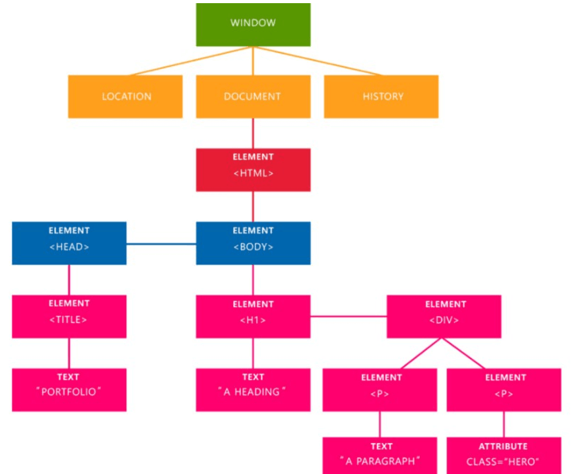

DOM é a sigla em inglês para Document Object Model, que significa modelo de documento por objetos.
É uma interface padronizada que permite que navegadores e scripts possam manipular o
conteúdo de uma página web.
É ele, ainda, que põe ordem na navegação web para que o conteúdo fique acessível a todos.
Mais um modo de explicar
Ele é utilizado pelo navegador para representar a sua página Web.
É ele que fornece uma representação estruturada do documento como se fosse uma espécie de árvore com galhos,
definindo métodos para que possam ser alterados estrutura, estilo e conteúdo do documento.

Mas o que são esses nomes listados na imagem?
Uma página da Web é um documento. Este documento pode ser exibido na janela do navegador ou como a fonte HTML.
Mas é o mesmo documento nos dois casos. O DOM representa o mesmo documento para que possa ser manipulado.
O DOM é uma representação orientada a objetos da página da web, que pode ser modificada com uma linguagem de script como JavaScript.
Mais um complemento
O objeto window representa uma janela que contém um elemento DOM;
a propriedade document aponta para o documento DOM document carregado naquela janela.
Uma janela para um dado documento pode ser obtido usando a propriedade document.defaultView.
Vou explicar os principais um a um
Document
Quando um membro retorna um objeto do tipo document(por exemplo,
uma propriedade ownerDocument de um elemento ou documentao qual ele pertence),
retornaesse objeto é o próprio objeto de documentraiz.
Node
Todo objeto localizado em um documento é um nó de tipo algum. Em um documento HTML,
um objeto pode ser um nó de elemento, mas também um nó de texto ou atributo.
Element
O tipo do elementé baseado em node. Isso se refere a um elemento ou um nó do tipo elementretornado por um membro da API DOM.
Ao invés de dizer, por exemplo, que o método document.createElement() retorna um objeto de referência para um nó,
nós apenas dizemos que esse método retorna o elementque acabou de ser criado no DOM.
Os objetos element implementam uma interface DOM Elemente também uma interface Nodebásica,
sendo ambas incluídas nesta referência. Em um documento HTML, os elementos são ainda mais aprimorados pelas APIs HTML DOM.
Dom e JavaScript
O DOM não é uma linguagem de programação, mas sem ela, a linguagem JavaScript não teria nenhum modelo ou noção de páginas da web,
documentos HTML, documentos XML e suas partes componentes (por exemplo, elementos).
Cada elemento de um documento - o documento como um todo, o cabeçalho, as tabelas do documento, os cabeçalhos da tabela,
o texto nas células da tabela - faz parte do modelo de objeto do documento desse documento,
para que todos possam ser acessados e manipulados usando o método DOM e uma linguagem de script como JavaScript.
No início, o JavaScript e o DOM estavam fortemente interligados, mas, eventualmente, evoluíram para entidades separadas.
O conteúdo da página é armazenado no DOM e pode ser acessado e manipulado via JavaScript,
para que possamos escrever esta equação aproximada:
Como identificar elementos a partir do DOM pelo JavaScript?
para o DOM ser selecionado e acessado pelo JavaScript, o HTML precisa de identificadores,
a partir deles podemos achar os itens a serem modificados
Essas propriedades são chamadas de atributos
Os principais atributos são: Id,
Class e Name
Os atributos são organizados dentro das tags, as tags são como recipientes semânticos,
ou seja, eles são responsaveis por organizar os conteúdos HTML, cada tipo de conteúdo com sua tag e seu valor semântico
id: É um identificador único de elemento, ou seja, apenas um elemento pode ter essa identificação, ele pode ser usado dentro da tag
desta maneira => id="identificador"
Name: Deve ser usado principalmente para identificar campos de formulários.
Sempre que realizamos um “submit” de um formulário, o atributo NAME é o identificador dentro de uma requisição GET ou POST no servidor.
Class: As classes são agrupadores,
os elementos que tem o mesmo comportamento e não precisam de exclusividade podem ser agrupadas por uma classe
Como selecionar o DOM pelo JavaScript?
Depois de organizar os identificadores (atributos) dentro de suas respectivas tags,
é possivel acessar qualquer elemento desejado que contenha um identificador, através do JavaScript!
exemplos:
Como acessar o DOM pelo JavaScript?
Existem diferentes jeitos de acessar um elemento depois que selecionamos ele, por exemplo:
innerText =>
innerText é uma propriedade que representa o conteúdo textual "renderizado" de um nó e seus descendentes. Usada como getter,
retorna de maneira aproximada o texto que o usuário obteria caso tivesse selecionado o conteúdo e copiado para a área de transferência.
innerText -> Retorna somente o texto, sem formatações ou elementos html.
innerHTML =>
innerHTML define ou obtém a sintaxe HTML ou XML descrevendo os elementos descendentes.
innerHtml -> Retorna o texto, COM formatações e COM elementos html.
textContent => A propriedade textContent da interface Node representa o conteúdo de texto de um nó e dos seus descendentes.
textContent -> Retorna o text COM formatações, mas sem os elementos html.